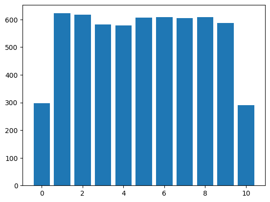

from tsai.data.core import TSCategorize
from tsai.data.external import get_UCR_data
from tsai.data.preprocessing import TSStandardizeTime Series Data Augmentation
Functions used to transform TSTensors (Data Augmentation)
dsid = 'NATOPS'
X, y, splits = get_UCR_data(dsid, return_split=False)
tfms = [None, TSCategorize()]
batch_tfms = TSStandardize()
dls = get_ts_dls(X, y, tfms=tfms, splits=splits, batch_tfms=batch_tfms, bs=128)
xb, yb = next(iter(dls.train))TSIdentity
TSIdentity (magnitude=None, **kwargs)
Applies the identity tfm to a TSTensor batch
test_eq(TSIdentity()(xb, split_idx=0).shape, xb.shape)TSShuffle_HLs
TSShuffle_HLs (magnitude=1.0, ex=None, **kwargs)
Randomly shuffles HIs/LOs of an OHLC TSTensor batch
test_eq(TSShuffle_HLs()(xb, split_idx=0).shape, xb.shape)TSShuffleSteps
TSShuffleSteps (magnitude=1.0, ex=None, **kwargs)
Randomly shuffles consecutive sequence datapoints in batch
t = TSTensor(torch.arange(11).float())
tt_ = []
for _ in range(1000):
tt = TSShuffleSteps()(t, split_idx=0)
test_eq(len(set(tt.tolist())), len(t))
test_ne(tt, t)
tt_.extend([t for i,t in enumerate(tt) if t!=i])
x, y = np.unique(tt_, return_counts=True) # This is to visualize distribution which should be equal for all and half for first and last items
plt.bar(x, y);
TSGaussianNoise
TSGaussianNoise (magnitude=0.5, additive=True, ex=None, **kwargs)
Applies additive or multiplicative gaussian noise
test_eq(TSGaussianNoise(.1, additive=True)(xb, split_idx=0).shape, xb.shape)
test_eq(TSGaussianNoise(.1, additive=False)(xb, split_idx=0).shape, xb.shape)TSMagMulNoise
TSMagMulNoise (magnitude=1, ex=None, **kwargs)
Applies multiplicative noise on the y-axis for each step of a TSTensor batch
TSMagAddNoise
TSMagAddNoise (magnitude=1, ex=None, **kwargs)
Applies additive noise on the y-axis for each step of a TSTensor batch
test_eq(TSMagAddNoise()(xb, split_idx=0).shape, xb.shape)
test_eq(TSMagMulNoise()(xb, split_idx=0).shape, xb.shape)
test_ne(TSMagAddNoise()(xb, split_idx=0), xb)
test_ne(TSMagMulNoise()(xb, split_idx=0), xb)random_cum_linear_generator
random_cum_linear_generator (o, magnitude=0.1)
random_cum_noise_generator
random_cum_noise_generator (o, magnitude=0.1, noise=None)
random_cum_curve_generator
random_cum_curve_generator (o, magnitude=0.1, order=4, noise=None)
random_curve_generator
random_curve_generator (o, magnitude=0.1, order=4, noise=None)
TSTimeNoise
TSTimeNoise (magnitude=0.1, ex=None, **kwargs)
Applies noise to each step in the x-axis of a TSTensor batch based on smooth random curve
test_eq(TSTimeNoise()(xb, split_idx=0).shape, xb.shape)
test_ne(TSTimeNoise()(xb, split_idx=0), xb)TSMagWarp
TSMagWarp (magnitude=0.02, ord=4, ex=None, **kwargs)
Applies warping to the y-axis of a TSTensor batch based on a smooth random curve
test_eq(TSMagWarp()(xb, split_idx=0).shape, xb.shape)
test_ne(TSMagWarp()(xb, split_idx=0), xb)TSTimeWarp
TSTimeWarp (magnitude=0.1, ord=6, ex=None, **kwargs)
Applies time warping to the x-axis of a TSTensor batch based on a smooth random curve
test_eq(TSTimeWarp()(xb, split_idx=0).shape, xb.shape)
test_ne(TSTimeWarp()(xb, split_idx=0), xb)TSWindowWarp
TSWindowWarp (magnitude=0.1, ex=None, **kwargs)
Applies window slicing to the x-axis of a TSTensor batch based on a random linear curve based on https://halshs.archives-ouvertes.fr/halshs-01357973/document
test_eq(TSWindowWarp()(xb, split_idx=0).shape, xb.shape)TSMagScalePerVar
TSMagScalePerVar (magnitude=0.5, ex=None, **kwargs)
Applies per_var scaling to the y-axis of a TSTensor batch based on a scalar
TSMagScale
TSMagScale (magnitude=0.5, ex=None, **kwargs)
Applies scaling to the y-axis of a TSTensor batch based on a scalar
test_eq(TSMagScale()(xb, split_idx=0).shape, xb.shape)
test_eq(TSMagScalePerVar()(xb, split_idx=0).shape, xb.shape)
test_ne(TSMagScale()(xb, split_idx=0), xb)
test_ne(TSMagScalePerVar()(xb, split_idx=0), xb)TSRandomResizedCrop
TSRandomResizedCrop (magnitude=0.1, size=None, scale=None, ex=None, mode='linear', **kwargs)
Randomly amplifies a sequence focusing on a random section of the steps
test_eq(TSRandomResizedCrop(.5)(xb, split_idx=0).shape, xb.shape)
test_ne(TSRandomResizedCrop(size=.8, scale=(.5, 1))(xb, split_idx=0).shape, xb.shape)
test_ne(TSRandomResizedCrop(size=20, scale=(.5, 1))(xb, split_idx=0).shape, xb.shape)TSWindowSlicing
TSWindowSlicing (magnitude=0.1, ex=None, mode='linear', **kwargs)
Randomly extracts an resize a ts slice based on https://halshs.archives-ouvertes.fr/halshs-01357973/document
test_eq(TSWindowSlicing()(xb, split_idx=0).shape, xb.shape)
test_ne(TSWindowSlicing()(xb, split_idx=0), xb)TSRandomZoomOut
TSRandomZoomOut (magnitude=0.1, ex=None, mode='linear', **kwargs)
Randomly compresses a sequence on the x-axis
test_eq(TSRandomZoomOut(.5)(xb, split_idx=0).shape, xb.shape)TSRandomTimeScale
TSRandomTimeScale (magnitude=0.1, ex=None, mode='linear', **kwargs)
Randomly amplifies/ compresses a sequence on the x-axis keeping the same length
test_eq(TSRandomTimeScale(.5)(xb, split_idx=0).shape, xb.shape)TSRandomTimeStep
TSRandomTimeStep (magnitude=0.02, ex=None, mode='linear', **kwargs)
Compresses a sequence on the x-axis by randomly selecting sequence steps and interpolating to previous size
test_eq(TSRandomTimeStep()(xb, split_idx=0).shape, xb.shape)TSResampleSteps
TSResampleSteps (step_pct=1.0, same_seq_len=True, magnitude=None, **kwargs)
Transform that randomly selects and sorts sequence steps (with replacement) maintaining the sequence length
test_eq(TSResampleSteps(step_pct=.9, same_seq_len=False)(xb, split_idx=0).shape[-1], round(.9*xb.shape[-1]))
test_eq(TSResampleSteps(step_pct=.9, same_seq_len=True)(xb, split_idx=0).shape[-1], xb.shape[-1])TSBlur
TSBlur (magnitude=1.0, ex=None, filt_len=None, **kwargs)
Blurs a sequence applying a filter of type [1, 0, 1]
test_eq(TSBlur(filt_len=7)(xb, split_idx=0).shape, xb.shape)
test_ne(TSBlur()(xb, split_idx=0), xb)TSSmooth
TSSmooth (magnitude=1.0, ex=None, filt_len=None, **kwargs)
Smoothens a sequence applying a filter of type [1, 5, 1]
test_eq(TSSmooth(filt_len=7)(xb, split_idx=0).shape, xb.shape)
test_ne(TSSmooth()(xb, split_idx=0), xb)TSFreqDenoise
TSFreqDenoise (magnitude=0.1, ex=None, wavelet='db4', level=2, thr=None, thr_mode='hard', pad_mode='per', **kwargs)
Denoises a sequence applying a wavelet decomposition method
maddest
maddest (d, axis=None)
try: import pywt
except ImportError: passif 'pywt' in dir():
test_eq(TSFreqDenoise()(xb, split_idx=0).shape, xb.shape)
test_ne(TSFreqDenoise()(xb, split_idx=0), xb)TSRandomFreqNoise
TSRandomFreqNoise (magnitude=0.1, ex=None, wavelet='db4', level=2, mode='constant', **kwargs)
Applys random noise using a wavelet decomposition method
if 'pywt' in dir():
test_eq(TSRandomFreqNoise()(xb, split_idx=0).shape, xb.shape)TSRandomResizedLookBack
TSRandomResizedLookBack (magnitude=0.1, mode='linear', **kwargs)
Selects a random number of sequence steps starting from the end and return an output of the same shape
for i in range(100):
o = TSRandomResizedLookBack()(xb, split_idx=0)
test_eq(o.shape[-1], xb.shape[-1])TSRandomLookBackOut
TSRandomLookBackOut (magnitude=0.1, **kwargs)
Selects a random number of sequence steps starting from the end and set them to zero
for i in range(100):
o = TSRandomLookBackOut()(xb, split_idx=0)
test_eq(o.shape[-1], xb.shape[-1])TSVarOut
TSVarOut (magnitude=0.05, ex=None, **kwargs)
Set the value of a random number of variables to zero
test_eq(TSVarOut()(xb, split_idx=0).shape, xb.shape)TSCutOut
TSCutOut (magnitude=0.05, ex=None, **kwargs)
Sets a random section of the sequence to zero
test_eq(TSCutOut()(xb, split_idx=0).shape, xb.shape)TSTimeStepOut
TSTimeStepOut (magnitude=0.05, ex=None, **kwargs)
Sets random sequence steps to zero
test_eq(TSTimeStepOut()(xb, split_idx=0).shape, xb.shape)TSRandomCropPad
TSRandomCropPad (magnitude=0.05, ex=None, **kwargs)
Crops a section of the sequence of a random length
test_eq(TSRandomCropPad()(xb, split_idx=0).shape, xb.shape)TSMaskOut
TSMaskOut (magnitude=0.1, compensate:bool=False, ex=None, **kwargs)
Applies a random mask
test_eq(TSMaskOut()(xb, split_idx=0).shape, xb.shape)
test_ne(TSMaskOut()(xb, split_idx=0), xb)TSInputDropout
TSInputDropout (magnitude=0.0, ex=None, **kwargs)
Applies input dropout with required_grad=False
test_eq(TSInputDropout(.1)(xb, split_idx=0).shape, xb.shape)
test_ne(TSInputDropout(.1)(xb, split_idx=0), xb)TSTranslateX
TSTranslateX (magnitude=0.1, ex=None, **kwargs)
Moves a selected sequence window a random number of steps
test_eq(TSTranslateX()(xb, split_idx=0).shape, xb.shape)TSRandomShift
TSRandomShift (magnitude=0.02, ex=None, **kwargs)
Shifts and splits a sequence
test_eq(TSRandomShift()(xb, split_idx=0).shape, xb.shape)TSHorizontalFlip
TSHorizontalFlip (magnitude=1.0, ex=None, **kwargs)
Flips the sequence along the x-axis
test_eq(TSHorizontalFlip()(xb, split_idx=0).shape, xb.shape)
test_ne(TSHorizontalFlip()(xb, split_idx=0), xb)TSRandomTrend
TSRandomTrend (magnitude=0.1, ex=None, **kwargs)
Randomly rotates the sequence along the z-axis
test_eq(TSRandomTrend()(xb, split_idx=0).shape, xb.shape)TSVerticalFlip
TSVerticalFlip (magnitude=1.0, ex=None, **kwargs)
Applies a negative value to the time sequence
test_eq(TSVerticalFlip()(xb, split_idx=0).shape, xb.shape)
test_ne(TSVerticalFlip()(xb, split_idx=0), xb)TSResize
TSResize (magnitude=-0.5, size=None, ex=None, mode='linear', **kwargs)
Resizes the sequence length of a time series
for sz in np.linspace(.2, 2, 10): test_eq(TSResize(sz)(xb, split_idx=0).shape[-1], int(round(xb.shape[-1]*(1+sz))))
test_ne(TSResize(1)(xb, split_idx=0), xb)TSRandomSize
TSRandomSize (magnitude=0.1, ex=None, mode='linear', **kwargs)
Randomly resizes the sequence length of a time series
seq_len_ = []
for i in range(100):
o = TSRandomSize(.5)(xb, split_idx=0)
seq_len_.append(o.shape[-1])
test_lt(min(seq_len_), xb.shape[-1])
test_gt(max(seq_len_), xb.shape[-1])TSRandomLowRes
TSRandomLowRes (magnitude=0.5, ex=None, mode='linear', **kwargs)
Randomly resizes the sequence length of a time series to a lower resolution
TSDownUpScale
TSDownUpScale (magnitude=0.5, ex=None, mode='linear', **kwargs)
Downscales a time series and upscales it again to previous sequence length
test_eq(TSDownUpScale()(xb, split_idx=0).shape, xb.shape)TSRandomDownUpScale
TSRandomDownUpScale (magnitude=0.5, ex=None, mode='linear', **kwargs)
Randomly downscales a time series and upscales it again to previous sequence length
test_eq(TSRandomDownUpScale()(xb, split_idx=0).shape, xb.shape)
test_ne(TSDownUpScale()(xb, split_idx=0), xb)
test_eq(TSDownUpScale()(xb, split_idx=1), xb)TSRandomConv
TSRandomConv (magnitude=0.05, ex=None, ks=[1, 3, 5, 7], **kwargs)
Applies a convolution with a random kernel and random weights with required_grad=False
for i in range(5):
o = TSRandomConv(magnitude=0.05, ex=None, ks=[1, 3, 5, 7])(xb, split_idx=0)
test_eq(o.shape, xb.shape)TSRandom2Value
TSRandom2Value (magnitude=0.1, sel_vars=None, sel_steps=None, static=False, value=nan, **kwargs)
Randomly sets selected variables of type TSTensor to predefined value (default: np.nan)
t = TSTensor(torch.ones(2, 3, 10))
TSRandom2Value(magnitude=0.5, sel_vars=None, sel_steps=None, static=False, value=0)(t, split_idx=0).datatensor([[[1., 0., 0., 1., 0., 1., 0., 1., 0., 1.],
[0., 0., 1., 0., 1., 1., 0., 0., 0., 0.],
[1., 1., 0., 1., 0., 0., 1., 0., 1., 1.]],
[[0., 1., 1., 0., 0., 1., 1., 1., 1., 0.],
[0., 0., 0., 0., 1., 1., 1., 1., 0., 1.],
[0., 1., 1., 1., 0., 0., 1., 1., 0., 0.]]])t = TSTensor(torch.ones(2, 3, 10))
TSRandom2Value(magnitude=0.5, sel_vars=[1], sel_steps=slice(-5, None), static=False, value=0)(t, split_idx=0).datatensor([[[1., 1., 1., 1., 1., 1., 1., 1., 1., 1.],
[1., 1., 1., 1., 1., 1., 1., 0., 0., 0.],
[1., 1., 1., 1., 1., 1., 1., 1., 1., 1.]],
[[1., 1., 1., 1., 1., 1., 1., 1., 1., 1.],
[1., 1., 1., 1., 1., 0., 1., 0., 0., 0.],
[1., 1., 1., 1., 1., 1., 1., 1., 1., 1.]]])t = TSTensor(torch.ones(2, 3, 10))
TSRandom2Value(magnitude=0.5, sel_vars=[1], sel_steps=None, static=True, value=0)(t, split_idx=0).datatensor([[[1., 1., 1., 1., 1., 1., 1., 1., 1., 1.],
[1., 1., 1., 1., 1., 1., 1., 1., 1., 1.],
[1., 1., 1., 1., 1., 1., 1., 1., 1., 1.]],
[[1., 1., 1., 1., 1., 1., 1., 1., 1., 1.],
[0., 0., 0., 0., 0., 0., 0., 0., 0., 0.],
[1., 1., 1., 1., 1., 1., 1., 1., 1., 1.]]])t = TSTensor(torch.ones(2, 3, 10))
TSRandom2Value(magnitude=1, sel_vars=1, sel_steps=None, static=False, value=0)(t, split_idx=0).datatensor([[[1., 1., 1., 1., 1., 1., 1., 1., 1., 1.],
[0., 0., 0., 0., 0., 0., 0., 0., 0., 0.],
[1., 1., 1., 1., 1., 1., 1., 1., 1., 1.]],
[[1., 1., 1., 1., 1., 1., 1., 1., 1., 1.],
[0., 0., 0., 0., 0., 0., 0., 0., 0., 0.],
[1., 1., 1., 1., 1., 1., 1., 1., 1., 1.]]])t = TSTensor(torch.ones(2, 3, 10))
TSRandom2Value(magnitude=1, sel_vars=[1,2], sel_steps=None, static=False, value=0)(t, split_idx=0).datatensor([[[1., 1., 1., 1., 1., 1., 1., 1., 1., 1.],
[0., 0., 0., 0., 0., 0., 0., 0., 0., 0.],
[0., 0., 0., 0., 0., 0., 0., 0., 0., 0.]],
[[1., 1., 1., 1., 1., 1., 1., 1., 1., 1.],
[0., 0., 0., 0., 0., 0., 0., 0., 0., 0.],
[0., 0., 0., 0., 0., 0., 0., 0., 0., 0.]]])t = TSTensor(torch.ones(2, 3, 10))
TSRandom2Value(magnitude=1, sel_vars=1, sel_steps=[1,3,5], static=False, value=0)(t, split_idx=0).datatensor([[[1., 1., 1., 1., 1., 1., 1., 1., 1., 1.],
[1., 0., 1., 0., 1., 0., 1., 1., 1., 1.],
[1., 1., 1., 1., 1., 1., 1., 1., 1., 1.]],
[[1., 1., 1., 1., 1., 1., 1., 1., 1., 1.],
[1., 0., 1., 0., 1., 0., 1., 1., 1., 1.],
[1., 1., 1., 1., 1., 1., 1., 1., 1., 1.]]])t = TSTensor(torch.ones(2, 3, 10))
TSRandom2Value(magnitude=1, sel_vars=[1,2], sel_steps=[1,3,5], static=False, value=0)(t, split_idx=0).datatensor([[[1., 1., 1., 1., 1., 1., 1., 1., 1., 1.],
[1., 0., 1., 0., 1., 0., 1., 1., 1., 1.],
[1., 0., 1., 0., 1., 0., 1., 1., 1., 1.]],
[[1., 1., 1., 1., 1., 1., 1., 1., 1., 1.],
[1., 0., 1., 0., 1., 0., 1., 1., 1., 1.],
[1., 0., 1., 0., 1., 0., 1., 1., 1., 1.]]])t = TSTensor(torch.ones(2,3,4))
TSRandom2Value(magnitude=.5, sel_vars=[0,2])(t, split_idx=0).datatensor([[[nan, nan, 1., 1.],
[1., 1., 1., 1.],
[nan, nan, 1., nan]],
[[1., nan, 1., nan],
[1., 1., 1., 1.],
[1., nan, nan, nan]]])t = TSTensor(torch.ones(2,3,4))
TSRandom2Value(magnitude=.5, sel_steps=slice(2, None))(t, split_idx=0).datatensor([[[1., 1., 1., nan],
[1., 1., 1., 1.],
[1., 1., 1., nan]],
[[1., 1., 1., 1.],
[1., 1., 1., 1.],
[1., 1., 1., 1.]]])t = TSTensor(torch.ones(2,3,100))
test_gt(np.isnan(TSRandom2Value(magnitude=.5)(t, split_idx=0)).sum().item(), 0)
t = TSTensor(torch.ones(2,3,100))
test_gt(np.isnan(TSRandom2Value(magnitude=.5, sel_vars=[0,2])(t, split_idx=0)[:, [0,2]]).sum().item(), 0)
t = TSTensor(torch.ones(2,3,100))
test_eq(np.isnan(TSRandom2Value(magnitude=.5, sel_vars=[0,2])(t, split_idx=0)[:, 1]).sum().item(), 0)TSMask2Value
TSMask2Value (mask_fn, value=nan, sel_vars=None, **kwargs)
Randomly sets selected variables of type TSTensor to predefined value (default: np.nan)
t = TSTensor(torch.ones(2,3,100))
def _mask_fn(o, r=.15, value=np.nan):
return torch.rand_like(o) > (1-r)
test_gt(np.isnan(TSMask2Value(_mask_fn)(t, split_idx=0)).sum().item(), 0)RandAugment
RandAugment (tfms:list, N:int=1, M:int=3, **kwargs)
A transform that before_call its state at each __call__
test_ne(RandAugment(TSMagAddNoise, N=5, M=10)(xb, split_idx=0), xb)TestTfm
TestTfm (tfm, magnitude=1.0, ex=None, **kwargs)
Utility class to test the output of selected tfms during training
get_tfm_name
get_tfm_name (tfm)
test_eq(get_tfm_name(partial(TSMagScale()))==get_tfm_name((partial(TSMagScale()), 0.1, .05))==get_tfm_name(TSMagScale())==get_tfm_name((TSMagScale(), 0.1, .05)), True)all_TS_randaugs_names = [get_tfm_name(t) for t in all_TS_randaugs]